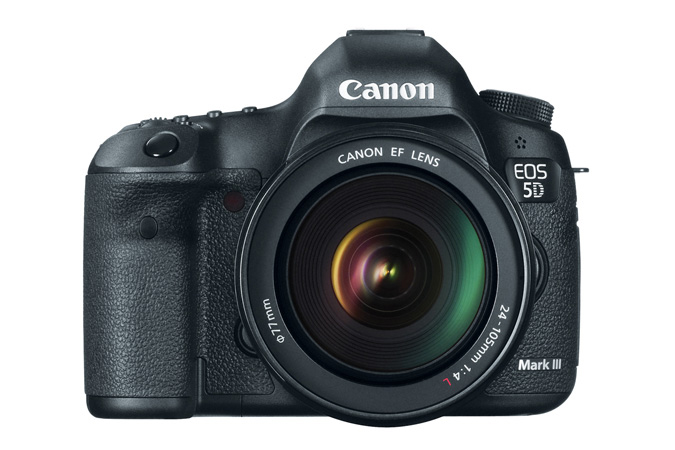
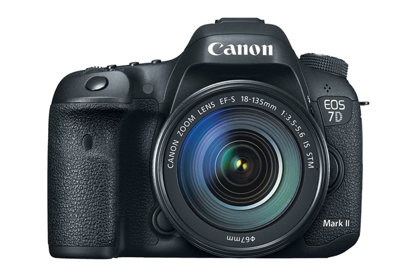
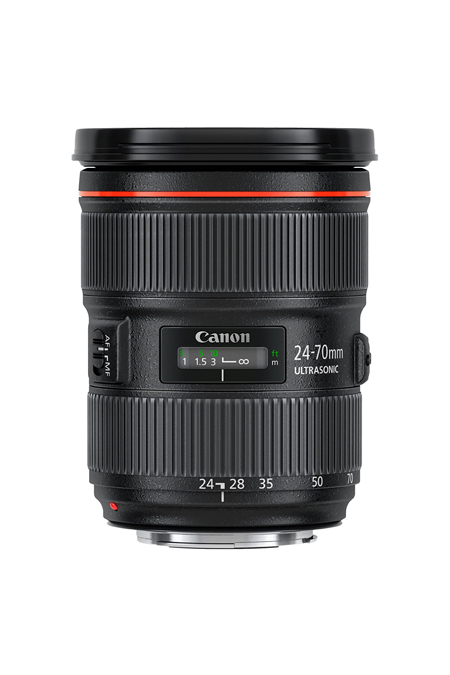
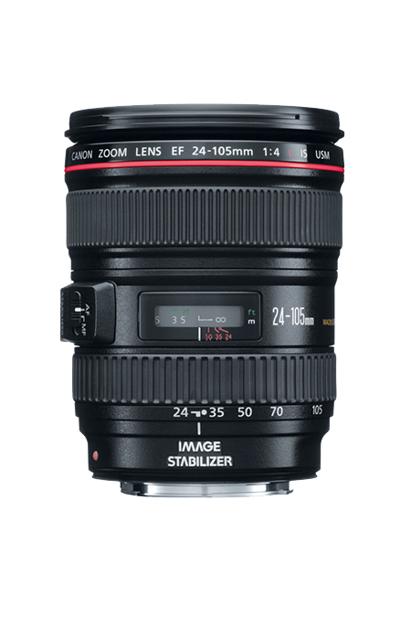
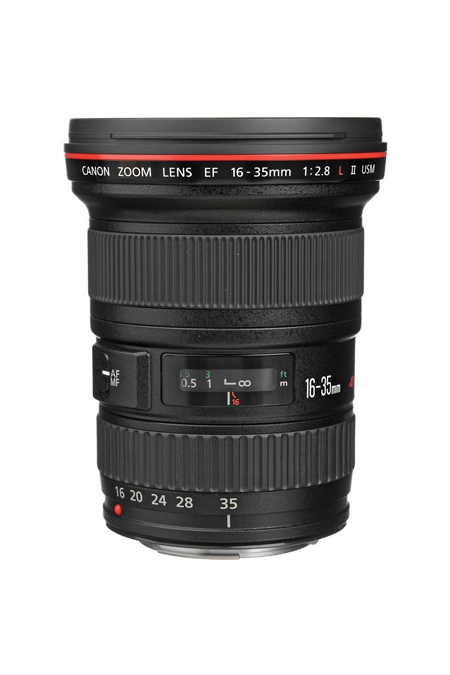
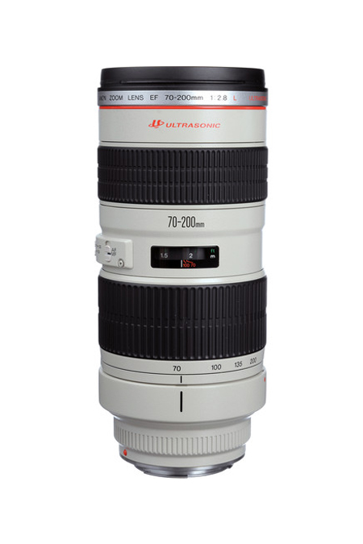
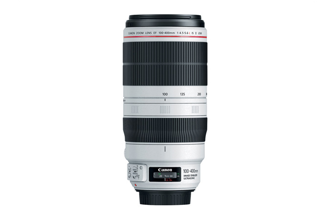
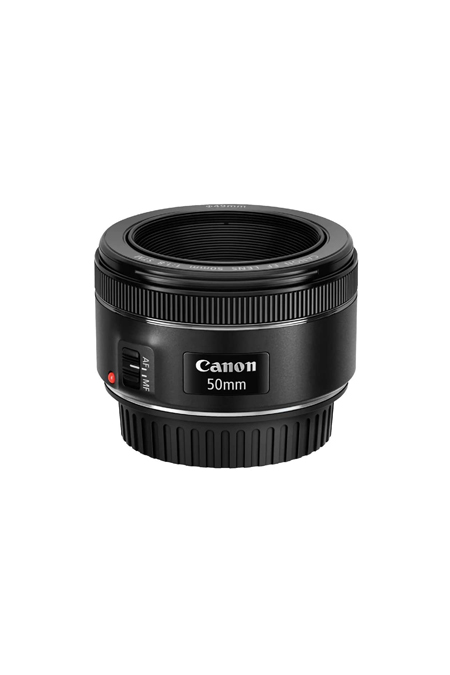
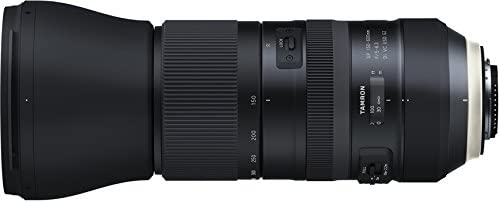

Gear
Cameras

Canon EOS 5D Mark III

Canon EOS 7D Mark II
Lenses

Canon EF 24-70mm f/2.8L II USM

Canon EF 24-105mm f/4L IS USM

Canon EF 16-35mm f/2.8L II USM

Canon EF 70-200mm f/2.8L IS USM

Canon EF 100-400mm f/4.5-5.6L IS II USM

Canon EF 50mm f/1.8 STM

Tamron SP 150-600mm F/5-6.3 Di VC USD G2